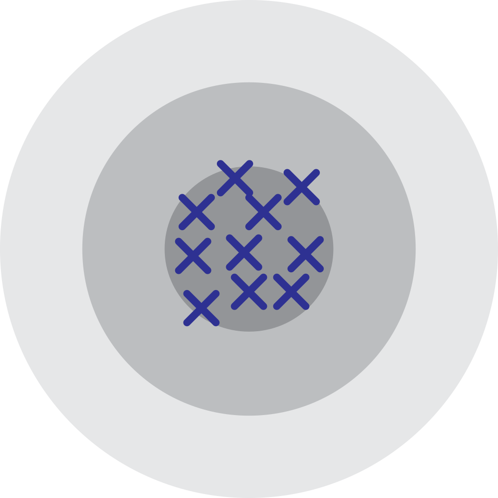
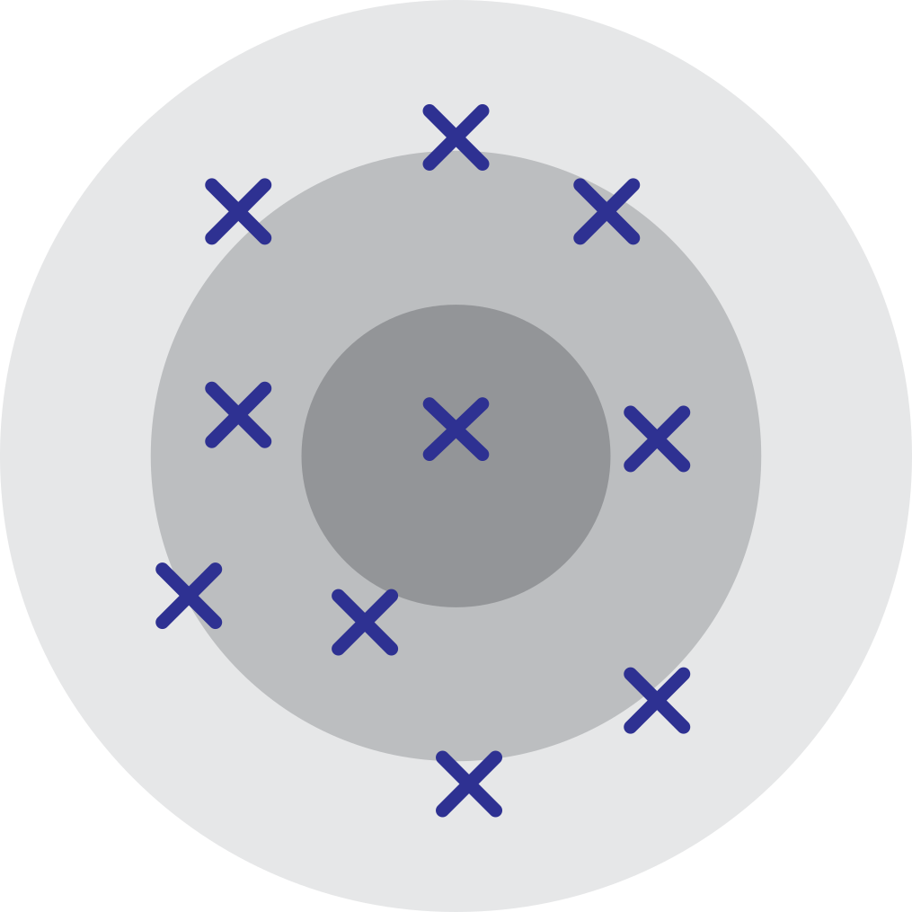
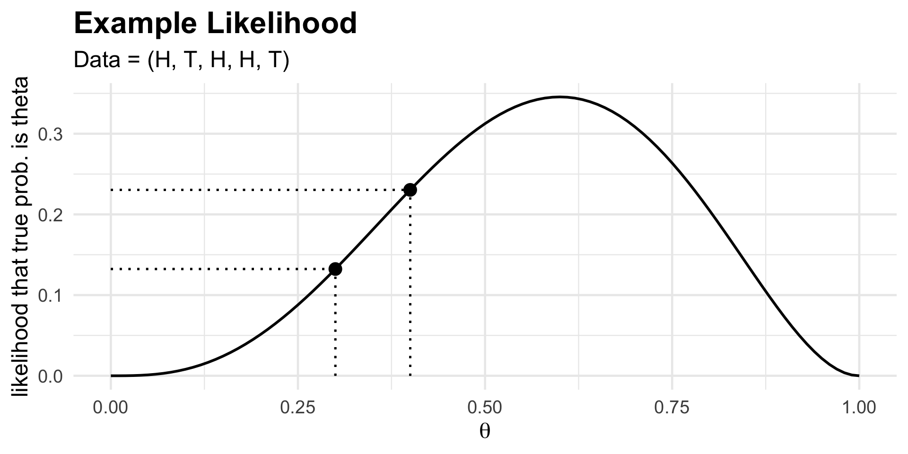
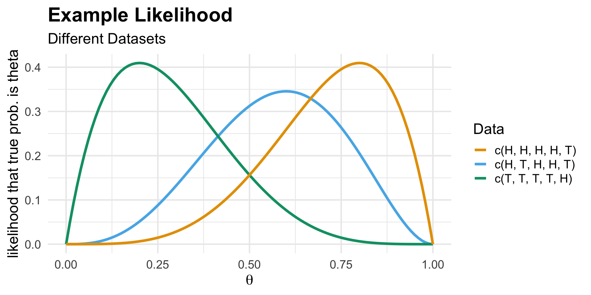
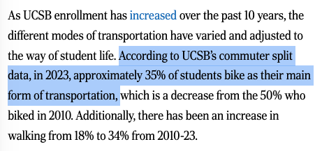
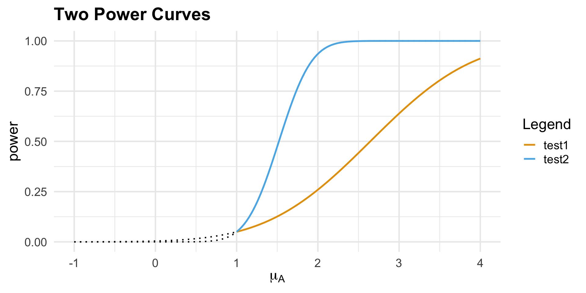
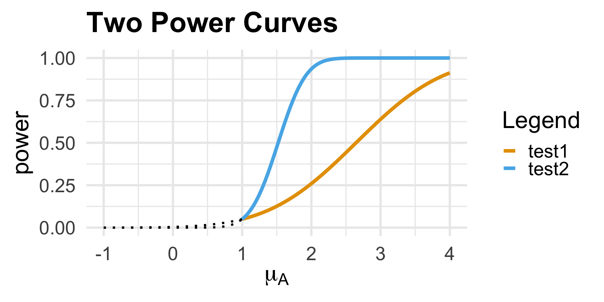

PSTAT 120B: Mathematical Statistics
Ethan’s Final Review Session
Department of Statistics and Applied Probability; UCSB
March 11, 2026
\[ \newcommand\R{\mathbb{R}} \newcommand{\N}{\mathbb{N}} \newcommand{\E}{\mathbb{E}} \newcommand{\S}{\mathbb{S}} \newcommand{\Prob}{\mathbb{P}} \newcommand{\F}{\mathcal{F}} \newcommand{\1}{1\!\!1} \newcommand{\comp}[1]{#1^{\complement}} \newcommand{\Var}{\mathrm{Var}} \newcommand{\SD}{\mathrm{SD}} \newcommand{\vect}[1]{\vec{\boldsymbol{#1}}} \newcommand{\tvect}[1]{\vec{\boldsymbol{#1}}^{\mathsf{T}}} \newcommand{\hvect}[1]{\widehat{\boldsymbol{#1}}} \newcommand{\mat}[1]{\mathbf{#1}} \newcommand{\tmat}[1]{\mathbf{#1}^{\mathsf{T}}} \newcommand{\Cov}{\mathrm{Cov}} \DeclareMathOperator*{\argmin}{\mathrm{arg} \ \min} \DeclareMathOperator*{\argmax}{\mathrm{arg} \ \max} \newcommand{\iid}{\stackrel{\mathrm{i.i.d.}}{\sim}} \newcommand{\Info}{\mathcal{I}} \newcommand{\Lik}{\mathcal{L}} \newcommand{\distto}{\stackrel{\mathrm{d}}{\longrightarrow}} \]
Welcome!
And A Disclaimer
- Hello! I’m Ethan (he/him), and I’m one of the TAs this quarter (I’ve hosted the Wednesday 1pm and Wednesday 2pm Sections).
Disclaimer
I have not yet seen the exam! What I cover here today is not meant to be an indication of exactly what will be covered on the exam.
Just because I cover something today doesn’t mean it will show up on the exam; similarly, just because I don’t cover something today doesn’t mean it won’t show up on the exam.
With that said, I have some prior experience with this class, so am basing my review on material I think could plausibly appear on the exam
Roadmap for Today
- Review some Material
- Estimation
- Hypothesis Testing
- Work through some problems
- I’ll pass out a worksheet later with some problems for groupwork (that we’ll later solve together)
- I will upload most (but not all!) material from today to a Google Drive folder; I’ll send a Canvas announcement with more information.
Estimation
Statistics
General Concepts
Definition: Statistic
A statistic is any quantity calculated from the sample data.
Some Examples:
- Sample Mean: \(\bar{X} := \frac{1}{n} \sum_{i=1}^{n} X_i\)
- Sample Variance: \(S_X^2 := \frac{1}{n - 1} \sum_{i=1}^{n} (X_i - \bar{X})^2\)
- Sample Maximum: \(X_{(n)} := \max\{X_1, \cdots, X_n\}\)
- Sample Minimum: \(X_{(1)} := \min\{X_1, \cdots, X_n\}\)
Key Takeaway
Crucially, statistics are random
Statistics
Example: Cat Weights


- Different samples contain potentially different cat weights, and therefore potentially different minimum weights, average weights, etc.
Statistics
Sampling Distributions
- The distribution of a statistic \(T(X_1, \cdots, X_n)\) is called its sampling distribution
- For example, we saw in lecture: assuming a normally-distributed sample, the sample mean has a normal sampling distribution (Reproductive Property of Normal RVs)
- In general, deriving sampling distributions can be involved. Two useful tools are:
- MGFs (assuming a linear combination of independent random variables)
- CDFs (may lead to difficult integrals, but will get you to the answer eventually!)
Statistics
Why Do We Care?
So, why do we care about statistics?
Let’s return to our cat weight example: suppose we consider the population of all cats in the world.
- Say I want to estimate \(\mu\), the true average weight of all cats in the world.
Idea 1: track down every cat in the world, weigh them, and calculate the average.
- Is this feasible? Not really…
Idea 2: take a random sample of cats, weigh them, and use the sampled cat weights to say something about the population of all cat weights.
Statistical Inference
General Framework
We have a population, governed by a set of population parameters that are unobserved (but that we’d like to make claims about).
To make claims about the population parameters, we take a sample.
We then use our sample to make inferences (i.e. claims) about the population parameters.

- Inference could mean estimation or hypothesis testing.
Estimation
General Framework
Goal
Use random samples \(X_1, X_2, \cdots, X_n\) drawn from some population distribution \(F\) prescribed by a parameter \(\theta\) to estimate \(\theta\).
- Estimator: a statistic being used to estimate the parameter.
- Is an estimator random or deterministic?
- Estimate: a particular realization of an estimator.
- Equivalently: the numerical value obtained by applying an estimator to a particular realized sample.
- Two questions arise: (1) How can we construct estimators? (2) How can we quantify the performance of an estimator?
Estimation
Performance of an Estimator
Definition: Bias
The bias of an estimator \(\widehat{\theta}_n\) being used to estimate a parameter \(\theta\) is defined to be \[ \mathrm{Bias}(\widehat{\theta}_n) := \E[\widehat{\theta}_n] - \theta \] If \(\mathrm{Bias}(\widehat{\theta}_n) = 0\), we say that \(\widehat{\theta}_n\) is an unbiased estimator for \(\theta\).
- An unbiased estimator is one that “on average, gets it right.”
- Equivalently: the sampling distribution of an unbiased estimator is centered at the true value of the parameter.
Exercise 1
Show that the sample mean is an unbiased estimator for the population mean.
Estimation
An Analogy
Unbiasedness, however, is often not enough. To motivate why, let’s take a look at an analogy.
An analogy is often drawn between estimation and hitting a bullseye.
- The bullseye is akin to our estimand, and estimates are represented by shots fired at the target.
- The estimator is, therefore, akin to the marskperson.
An unbiased estimator is analogous to a marksperson for whom the average location of shots is the bullseye.
Estimation
Two Markspersons
- Which of the following markspersons is “better”?

Marksperson 1

Marksperson 2
Estimation
Two Markspersons
So, unbiasedness is not enough; we’d also like small variance.
To that end, we introduce the mean squared-error (MSE) of an estimator: \[ \mathrm{MSE}(\widehat{\theta}_n) := \E\left[(\widehat{\theta}_n - \theta)^2 \right] \]
Bias-Variance Decomposition
\[ \mathrm{MSE}(\widehat{\theta}_n) := \mathrm{Bias}^2(\widehat{\theta}_n) + \Var(\widehat{\theta}_n) \]
- Do we want estimators with high or low MSE?
Estimation
MVUE
So, we prefer estimators with low MSE.
If an estimator is unbiased, its MSE is just equal to its variance.
Therefore, among all unbiased estimators, it seems that the “best” one is the one that has smallest variance.
- That is, an “optimal” estimator is one that is unbiased and has minimum variance…
- Such an estimator is called the MVUE (Minimum Variance Unbiased Estimator).
Estimation
MVUE
- Constructing an MVUE can be a task and a half.
- It is often much easier to verify whether a given estimator is an MVUE or not.
Cramér-Rao Lower Bound
The smallest variance attainable by an unbiased estimator for a parameter \(\theta\) is \([\mathcal{I}_n(\theta)]^{-1}\), where \(\mathcal{I}_n(\theta)\) denotes the Fisher Information of the Sample \(X_1, X_2, \cdots, X_n\): \[ \mathcal{I}_n(\theta) := \Var\left( \frac{\partial}{\partial \theta} \ell(\theta; X_1, \cdots, X_n) \right) = - \E\left[ \frac{\partial^2}{\partial \theta^2} \ell(\theta; X_1, \cdots, X_n) \right] \]
- An estimator whose variance is equal to the CRLB (Cramér-Rao Lower Bound) is said to be efficient
Estimation
MVUE
Fact
An unbiased, efficient estimator will be the MVUE.
- Remember: \(\widehat{\theta}_n\) being efficient means its variance is \([\mathcal{I}_n(\theta)]^{-1}\).
- But we also know that no estimator has variance smaller than \([\mathcal{I}_n(\theta)]^{-1}\).
- Therefore, no unbiased estimator has variance smaller than that of \(\widehat{\theta}_n\); i.e. among all unbiased estimators, \(\widehat{\theta}_n\) has the smallest variance.
- The “converse” is not necessarily true: just because an unbiased estimator is not efficient doesn’t mean it’s not the MVUE.
Estimation
Fisher Information
Before we do an example, I’d like to return to the notion of Fisher Information.
There are actually two types of Fisher Information we’ve been talking about!
- One is the Fisher Information of a single observation X, denote \(\Info(\theta)\)
- The other is the Fisher Information of a sample X1, …, Xn, denoted \(\Info_n(\theta)\).
If our sample is IID, then \(\Info_n(\theta) = n \Info(\theta)\).
- As a general rule-of-thumb: if you’re dealing with the entire sample, don’t multiply by n again.
Fisher Information
Example
Example: \(X_1, X_2, \cdots, X_n \iid \mathrm{Expo}(\lambda)\)
Likelihood of the sample: \(\mathcal{L}(\lambda; \vect{X}) = \prod_{i=1}^{n} \left( \lambda e^{-\lambda X_i} \right) = \lambda^n e^{-\lambda \sum_{i=1}^{n} X_i}\)
Log-Likelihood of the sample: \(\ell(\lambda; \vect{X}) = n \ln(\lambda) - \lambda \sum_{i=1}^{n} X_i\)
Score Function of the Sample: \(\frac{\mathrm{d}}{\mathrm{d}\lambda} \ell(\lambda; \vect{X}) = \frac{n}{\lambda} - \sum_{i=1}^{n} X_i\)
Curvature of Log-Likelihood of the Sample: \(\frac{\mathrm{d}^2}{\mathrm{d}\lambda^2} \ell(\lambda; \vect{X}) = - \frac{n}{\lambda^2}\)
Fisher Information of the Sample: \(\mathcal{I}_n(\lambda) = - \E\left[ \frac{\mathrm{d}^2}{\mathrm{d}\lambda^2} \ell(\lambda; \vect{X}) \right] = - \E\left[ - \frac{n}{\lambda^2} \right] = \boxed{\frac{n}{\lambda^2}}\)
Likelihood of an observation: \(\mathcal{L}(\lambda; X) = \lambda e^{-\lambda X}\)
Log-Likelihood of an observation: \(\ell(\lambda; X) = \ln(\lambda) - \lambda X\)
Score Function of an Observation: \(\frac{\mathrm{d}}{\mathrm{d}\lambda} \ell(\lambda; X) = \frac{1}{\lambda} - X\)
Curvature of Log-Likelihood of an Observation: \(\frac{\mathrm{d}^2}{\mathrm{d}\lambda^2} \ell(\lambda; X) = - \frac{1}{\lambda^2}\)
Fisher Information of an Obs.: \(\mathcal{I}(\lambda) = - \E\left[ \frac{\mathrm{d}^2}{\mathrm{d}\lambda^2} \ell(\lambda; X) \right] = - \E\left[ - \frac{1}{\lambda^2} \right] = \frac{1}{\lambda^2}\)
Fisher Information of the Sample: \(\mathcal{I}(\lambda) = n \mathcal{I}(\lambda) = \boxed{ \frac{n}{\lambda^2} }\)
MVUE
Example
Example 2
Let \(X_1, \cdots, X_n \iid \mathcal{N}(\mu, 1)\). It can be shown that the Fisher Information of the Sample is given by \(\Info_n(\mu) = 1 / n\). Is \(\bar{X}\) the MVUE for \(\mu\)? Justify your answer carefully.
Estimation
Construction
Concepts like unbiasedness, MVUE, etc. all pertain to quantifying how well an estimator is doing at estimating a parameter.
We would also like to be able to construct estimators!
The two main methods we discussed in this class for constructing estimators are:
- Method of Moments
- Method of Maximum Likelihood Estimation
The method of moments is based on following idea: our sample moments should match the population moments closely.
- As such, we find the parameter estimators that set our sample moments equal to the population moments.
Likelihoods
Motivating Example
Suppose I have a coin that lands heads with some unknown probability θ.
I toss this coin five times, and observe 3 heads.
- Note that X := number of heads in 5 tosses of a \(\theta-\)coin follows a Binom(5, θ) distribution.
If \(\theta = 0.3\), what is the probability that I observed the data that I saw (e.g. X = 3)?
- \(\Prob(X = 3 \mid \theta = 0.3) = \binom{5}{3} (0.3)^{3} (0.7)^{2} \approx 0.1323\)
If \(\theta = 0.4\), what is the probability that I observed the data that I saw (e.g. X = 3)?
- \(\Prob(X = 3 \mid \theta = 0.4) = \binom{5}{3} (0.4)^{3} (0.6)^{2} \approx 0.2304\)
Likelihoods
Example

Likelihoods
Example: Different Datasets

Likelihoods
Definition
Conceptually, the likelihood \(\Lik(\theta; x_1, x_2, \cdots, x_n)\) answers the question: if the true value of the parameter were \(\theta\), how likely was I to have observed \(x_1, x_2, \cdots, x_n\)?
Mathematically, the likelihood is just the marginal mass/density function
\[ \mathcal{L}(\theta; x_1, x_2, \cdots, x_n) := f_{X_1, X_2, \cdots, X_n}(x_1, x_2, \cdots, x_n; \theta) \]
If the sample is i.i.d.: \(\displaystyle \mathcal{L}(\theta; x_1, x_2, \cdots, x_n) = \prod_{i=1}^{n} f(x_i; \theta)\)
The maximum likelihood estimate is the value of \(\theta\) under which our data was most likely to have been observed.
Maximum Likelihood Estimators
General Procedure
Definition: Maximum Likelihood Estimator
\[ (\widehat{\theta}_{1, \mathrm{MLE}}, \ \cdots, \ \widehat{\theta}_{m, \mathrm{MLE}}) := \argmax_{(\theta_1, \cdots, \theta_m)} \ \Lik(\theta_1, \cdots, \theta_m; X_1, X_2, \cdots, X_n) \]
- Procedurally, we often work with the log-likelihood instead. That is:
- Find the likelihood
- Take the logarithm to find the log-likelihood
- Set the derivative of the log-likelihood (aka the score function) equal to zero and solve
- Check that the second derivative is negative at our candidate value
Maximum Likelihood Estimators
Large-Sample Properties
Large-Sample Properties of the MLE
Under appropriate “regularity conditions,” \[ \widehat{\theta}_{\mathrm{MLE}} \distto \mathcal{N}\left(\theta, \ \frac{1}{\Info_n(\theta)} \right)\]
- The MLE is asymptotically normal
- The MLE is asymptotically unbiased
- The MLE is asymptotically the efficient
- Therefore, the MLE is asymptotically the MVUE
Hypothesis Testing
I Want To Ride my Bicycle
An Example
- The Daily Nexus claimed that 35% of UCSB students ride their bike to campus.

Letting p denote the true proportion of all UCSB students that primarily bike to campus, the Daily Nexus has claimed that p = 0.35
This claim, however, came from a sample of students; that is, the Daily Nexus did not survey every single UCSB student to obtain this claim.
- Do we believe the Daily Nexus’ Claim?
I Want To Ride my Bicycle
An Example
- Say we take a sample of 100 UCSB students, and find that 33 of them primarily bike to campus.
- 33% is not equal to 35%! So we can automatically claim that the Daily Nexus’ claim is false. Right?
- Well, not really. We know there is some inherent randomness in sampling, so just because our observed data doesn’t exactly agree with the Daily Nexus’ claim doesn’t mean that the original claim was false.
- However, suppose our sample of 100 UCSB students contained 87 people who primarily bike to campus.
- Now what do we think - is it starting to seem like the Daily Nexus’ claim might be false?
I Want To Ride my Bicycle
An Example
Of course, even if we observed \(\hat{p}\) = 87%, it is still possible that the true proportion is p = 0.35 and we just happened to get extraordinarily lucky.
- However, the probability of that occurring is so small that we believe it is more likely that the original claim was false.
So, somewhere between \(\hat{p}\) = 0.33 and \(\hat{p}\) = 0.87 exists a “cutoff”, past which we believe our data leads credence away from the Daily Nexus’ claim. Where is that cutoff?
Notice how this is a different question than the one estimation seeks to answer.
- We are not asking “what is the true proportion of UCSB students that primarily bike to campus?” Instead, we are asking “is the true proportion of UCSB students that primarily bike to campus equal to 35% or not?”
Hypothesis Testing
General Framework
This is the general framework of hypothesis testing.
We start off with two competing claims, the null hypothesis (denoted H0, and read “H-naught”) and the alternative hypothesis (denoted HA)
We then assume the null is true, and try and see if that leads us to any strange conclusions/contradictions (in which case we “reject the null in favor of the alternative”).
Typically, the null is the “status quo”, and is often of the form H0: θ = θ0 for some parameter θ and some null value θ0
- E.g. in our bicycle example, H0: p = 0.35 where p denotes the true proportion of UCSB students that primarily bike to campus.
Hypothesis Testing
Alternative Hypothesis
Given a null H0: θ = θ0, three main alternative hypotheses become available:
- Lower-Tailed: HA: θ < θ0
- Upper-Tailed: HA: θ > θ0
- Two-Tailed (aka Two-Sided): HA: θ ≠ θ0
In a given real-world setting, it is up to us to pick one of these.
Note: it is very important that the null and alternative hypotheses don’t have any overlap.
- For example, the following is an INCORRECT phrasing of a lower-tailed alternative: HA: θ ≤ θ0. Can anyone tell me (conceptually) why this is?
Hypothesis Testing
The Test
- A hypothesis test is essentially a rule that takes in data, and returns one of two outcomes: “reject the null in favor of the alternative” or “fail to reject the null in favor of the alternative”
\[ \texttt{decision}(\texttt{data}) = \begin{cases} \texttt{reject null in favor of alternative} & \text{if ...} \\ \texttt{f.t.r. null in favor of alternative} & \text{if ...} \\ \end{cases} \]
Of course, there is the question of when our test rejects/fails to reject the null!
Typically, the set of all data values for which we reject the null is called the rejection region
To construct the rejection region, we need to take a step back.
Hypothesis Testing
States of the World
Our test either rejects or fails to reject the null.
Separately, the null is either true or not.
This leads to four states of the world:
| Result of Test | |||
| Reject | Fail to Reject | ||
| H0 | True | ||
| False | |||
- Some of these states are good, others are bad. Which are which?
Hypothesis Testing
States of the World
| Result of Test | |||
| Reject | Fail to Reject | ||
| H0 | True | BAD | GOOD |
| False | GOOD | BAD | |
- We give names to the two “bad” situations: Type I and Type II errors.
| Result of Test | |||
| Reject | Fail to Reject | ||
| H0 | True | Type I Error | GOOD |
| False | GOOD | Type II Error | |
States of the World
Type I and Type II Errors
Definition: Type I and Type II errors
- A Type I Error occurs when we reject \(H_0\), when \(H_0\) was actually true.
- A Type II Error occurs when we fail to reject \(H_0\), when \(H_0\) was actually false.
A common way of interpreting Type I and Type II errors are in the context of the judicial system.
The US judicial system is built upon a motto of “innocent until proven guilty.” As such, the null hypothesis is that a given person is innocent.
A Type I error represents convicting an innocent person.
A Type II error represents letting a guilty person go free.
States of the World
Type I and Type II Errors
Viewing the two errors in the context of the judicial system also highlights a tradeoff.
If we want to reduce the number of times we wrongfully convict an innocent person, we may want to make the conditions for convicting someone even stronger.
But, this would have the consequence of having fewer people overall convicted, thereby (and inadvertently) increasing the chance we let a guilty person go free.
As such, controlling for one type of error increases the likelihood of committing the other type.
Hypothesis Testing
Example
Example: \(X_1, X_2, \cdots, X_n \iid \mathcal{N}(\mu, 1)\) for some unknown \(\mu \in \R\), and consider testing \(H_0: \mu = \mu_0\) vs \(H_A: \mu > \mu_0\) at a 5% level of significance.
- Test 1: \(\mathcal{R}_1 = \left\{ X_1 - \mu_0 > 1.645 \right\}\)
- Test 2: \(\mathcal{R}_2 = \left\{ \frac{\bar{X} - \mu_0}{1 / \sqrt{n}} > 1.645 \right\}\)
Question 1: Do both of these tests have a 5% level of significance? \[\begin{align*} \class{fragment}{{} \mathrm{level}_1} &\class{fragment}{{} := \Prob(\text{Reject $H_0$} \mid \text{$H_0$ true}) } \class{fragment}{{} := \Prob(X_1 - \mu_0 > 1.645 \mid \mu = \mu_0) } \\[3px] & \class{fragment}{{} := \Prob(Z > 1.645) = 1 - \Prob(Z \leq 1.645)} \\[3px] & \class{fragment}{{} := 1 - \Phi(1.645) = 0.05 \ \checkmark} \end{align*}\]
Hypothesis Testing
Example
Example: \(X_1, X_2, \cdots, X_n \iid \mathcal{N}(\mu, 1)\) for some unknown \(\mu \in \R\), and consider testing \(H_0: \mu = \mu_0\) vs \(H_A: \mu > \mu_0\) at a 5% level of significance.
- Test 1: \(\mathcal{R}_1 = \left\{ X_1 - \mu_0 > 1.645 \right\}\)
- Test 2: \(\mathcal{R}_2 = \left\{ \frac{\bar{X} - \mu_0}{1 / \sqrt{n}} > 1.645 \right\}\)
Question 2: If the true value of \(\mu\) is \(\mu_A\) for some \(\mu_A > \mu_0\), what is the power of each test?
Hypothesis Testing
Example
Example: \(X_1, X_2, \cdots, X_n \iid \mathcal{N}(\mu, 1)\) for some unknown \(\mu \in \R\), and consider testing \(H_0: \mu = \mu_0\) vs \(H_A: \mu > \mu_0\) at a 5% level of significance. Test 1: \(\mathcal{R}_1 = \left\{ X_1 - \mu_0 > 1.645 \right\}\)
\[\begin{align*} \class{fragment}{{} \mathrm{Power}(\mu_A)} &\class{fragment}{{} := \Prob(\text{Reject $H_0$} \mid \mu = \mu_A) } \class{fragment}{{} := \Prob(X_1 - \mu_0 > 1.645 \mid \mu = \mu_A) } \\[3px] & \class{fragment}{{} := \Prob(X_1 > 1.645 + \mu_0 \mid \mu = \mu_A)} \\[3px] & \class{fragment}{{} := \Prob\left( X_1 - \mu_A > 1.645 + \mu_0 - \mu_A \mid \mu = \mu_A \right)} \\[3px] & \class{fragment}{{} := \Prob\left(Z > 1.645 + \mu_0 - \mu_A \right) = \boxed{ 1 - \Phi\left( 1.645 + \mu_0 - \mu_A \right)} } \\[3px] \end{align*}\]
Hypothesis Testing
Example
Example: \(X_1, X_2, \cdots, X_n \iid \mathcal{N}(\mu, 1)\) for some unknown \(\mu \in \R\), and consider testing \(H_0: \mu = \mu_0\) vs \(H_A: \mu > \mu_0\) at a 5% level of significance. Test 2: \(\mathcal{R}_2 = \left\{ \frac{\bar{X} - \mu_0}{1/\sqrt{n}} > 1.645 \right\}\)
\[\begin{align*} \class{fragment}{{} \mathrm{Power}(\mu_A)} &\class{fragment}{{} := \Prob(\text{Reject $H_0$} \mid \mu = \mu_A) } \class{fragment}{{} := \Prob\left(\frac{\bar{X} - \mu_0}{1/\sqrt{n}} > 1.645 \ \middle| \ \mu = \mu_A\right) } \\[3px] & \class{fragment}{{} := \Prob\left(\frac{\bar{X}}{1/\sqrt{n}} > 1.645 + \frac{\mu_0}{1/\sqrt{n}} \ \middle| \ \mu = \mu_A\right)} \\[3px] & \class{fragment}{{} := \Prob\left( \frac{\bar{X} - \mu_A}{1/\sqrt{n}} > 1.645 + \frac{\mu_0 - \mu_A}{1/\sqrt{n}} \ \middle| \ \mu = \mu_A \right)} \\[3px] & \class{fragment}{{} = \boxed{ 1 - \Phi\left(1.645 + \frac{\mu_0 - \mu_A}{1/\sqrt{n}} \right) } } \\[3px] \end{align*}\]
Hypothesis Testing
Example

Power
Hypotheses
- So, regardless of the true alternative value for \(\mu\), Test 2 has a higher power than Test 1.
- Intuitively, this makes sense: Test 1 ignores \((n - 1)\) datapoints, whereas Test 2 incorporates the full sample.
- In this way, we see that power can be used as a way to compare the performance of tests.
- Think of this as analogous to how MSE can be used to compare the performance of estimators.
- Fun Fact: for any test, the power of the test at \(\theta = \theta_0\) (where \(\theta_0\) is the null value) is … ?
Hypothesis Testing
Parameter Spaces
Let’s take a quick step back.
A simple hypothesis is one that uniquely specifies the distribution of the population from which the sample is taken.
Any hypothesis that is not simple is called composite; e.g. \(H: \ \theta > \theta'\).
Consider a uniparameter case; let \(\Theta_0\) denote the values of the parameter taken under the null (sometimes called the null space) and let \(\Theta_A\) denote the values of the parameter taken under the alternative; that is, \[ H_0: \ \theta \in \Theta_0 \qquad \text{vs} \qquad H_A: \ \theta \in \Theta_A \]
- A simple hypothesis corresponds to \(\Theta = \{\theta'\}\); i.e. a singleton set for the corresponding restricted parameter space.
Power
Comparing Power Curves
\(X_1, \cdots, X_n \iid \mathcal{N}(\mu, 1)\), \(\Theta_0 = \{\mu_0\}\), \(\Theta_A = (\mu_0, \infty)\)
\[\begin{align*} \mathcal{R}_1 & := \{X_1 - \mu_0 > 1.645 \} \\ \mathcal{R}_2 & := \left\{ \frac{\bar{X} - \mu_0}{1/\sqrt{n}} > 1.645 \right\} \end{align*}\]

\[ \beta_2(\mu_A) > \beta_1(\mu_A) \qquad \forall \mu_A \in \Theta_A \]
Power
UMP Tests
Suppose in a test of \(H_0: \theta \in \Theta_0\) vs \(H_A: \theta \in \Theta_A\), there exists a test with power function \(\beta(\cdot)\) such that \[ \beta(\theta_A) > \beta^{\ast}(\theta_A) \qquad \forall \beta^{\ast}, \ \forall \theta_A \in \Theta_A \]
That is, among all other tests (with corresponding power functions \(\beta^{\ast}\)), our original test has higher power for any value in the alternative space.
Such a test is called a Uniformly Most Powerful (UMP) test.
In general, UMP tests are very challenging to find, and don’t always exist!
However, if we restrict ourselves to a simple-vs-simple testing paradigm, things become a lot easier…
Power
Neyman-Pearson Lemma
Neyman-Pearson Lemma
Let \(X_1, \cdots, X_n\) denote a sample from a distribution F prescribed by a single parameter θ, and consider testing \(H_0: \theta = \theta_0\) vs \(H_A: \theta = \theta_A\). Let \(\Lik(\theta; X_1, \cdots, X_n)\) denote the likelihood, and consider the test with rejection region \[ \left\{ \frac{\Lik(\theta_0; X_1, \cdots, X_n)}{\Lik(\theta_A; X_1, \cdots, X_n)} < k \right\} \] for some critical value k selected to ensure the test has level \(\alpha\). Then, the resulting test is the most powerful \(\alpha-\)level test of \(H_0\) vs \(H_A\)
By the way, in the simple-vs-simple case we don’t say uniformly most powerful and instead say most powerful.
Important: The NPL only applies to a uniparameter, simple-vs-simple testing setting.
Power
Likelihood Ratio Test
Likelihood Ratio Test
Let \(X_1, \cdots, X_n\) denote a sample from a distribution F prescribed by a single parameter θ, and consider testing \(H_0: \theta = \theta_0\) vs \(H_A: \theta = \theta_A\). The likelihood ratio test is the test with rejection region
\[ \left\{ \frac{\max\limits_{\theta \in \Theta_0}\Lik(\theta; X_1, \cdots, X_n)}{\max\limits_{\theta \in \Theta_A}\Lik(\theta_A; X_1, \cdots, X_n)} < k \right\} \] where \(\Lik(\theta; X_1, \cdots, X_n)\) denotes the likelihood. The corresponding test statistic is often referred to as the likelihood ratio \(\Lambda\).
- To select k to ensure an appropriate significance level, we either:
- Rewrite the test statistic to be in a more recognizable form
- Use the fact that \(-2 \ln \Lambda \distto \chi^2_{\nu}\), with \(\nu =\) number of parameters specified by the null hypothesis.
Power
Likelihood Ratio Test: Example
- As an example of the first point, suppose \(X \sim \mathrm{Expo}(\lambda)\), \(H_0: \lambda = \lambda_0\), and \(H_A: \lambda = \lambda_a\) for some \(\lambda_a < \lambda_0\). \[ \Lambda := \frac{\max\limits_{\lambda \in \{\lambda_0\}}\Lik(\lambda; X)}{\max\limits_{\lambda \in \{\lambda_A\}}\Lik(\lambda; X)} = \frac{f(X; \lambda_0)}{f(X; \lambda_A)} = \frac{\lambda_0 e^{-\lambda_0 X}}{\lambda_a e^{-\lambda_A X}} = \left( \frac{\lambda_0}{\lambda_a} \right) e^{-(\lambda_0 - \lambda_a)X} \]
- Because \(\lambda_a < \lambda_0\), \(\Lambda(X)\) is a strictly decreasing function in X.
- As such, small values for \(\Lambda\) are achieved by large values of \(X\), meaning our rejection region is of the form \(\{X > k\}\).
- This makes it much easier to identify the correct value of k (i.e. the value that ensures the test has a desired level of significance)

PSTAT 120B - Winter 2026 with Dr. Annie Qu; material © Ethan P. Marzban